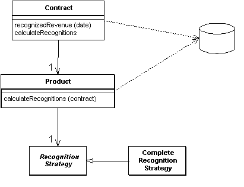
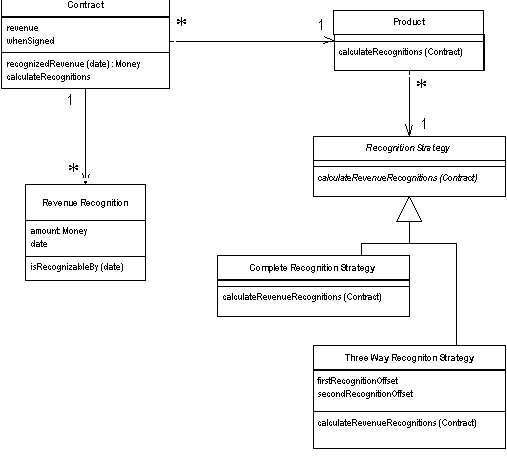

| Home | Articles | Talks | Links | Contact Me | ISA | ThoughtWorks |
Build an object model of the domain that incorporate both behavior and data.

At its worst, business logic can be a very complex matter. Rules and logic describe many different cases and slants of behavior. It is this complexity that objects were designed to work with. A Domain Model creates a web of interconnected objects, where each object represents some meaningful individual, which may be as large as a corporation, or as small as a single line on an order.
There's whole books written on this, so I hardly know where to start.
Putting a Domain Model into an application involves inserting a whole layer of objects. These objects model the business area that you're working in. You'll find objects that mimic the data in the business, and objects that capture the rules that the business uses. Mostly the data and process is combined together to cluster the processes close to the data the processes work with.
An OO domain model will often look similar to a database model, yet it will still have a lot of differences. A Domain Model mingles data and process, has multi-valued attributes, and there's inheritance.
Since the behavior of the business is subject to a lot of change, it's important to be able to modify, build, and test this layer easily. As a result you'll want the minimum of coupling from the Domain Model to other layers in the system. You'll notice that a guiding force of many layering patterns is to keep the as few dependencies as possible from the domain model to other parts of the system.
When you use a Domain Model there are a number of different scopes you might use. The simplest case is a single user application where the whole object graph is read from a file and put into memory. A desktop application may work this way, but it's less common for a multi-tiered IS application simply because there are too many objects. Putting every object into memory takes too long and consumes too much memory. The beauty of object-oriented databases is that they give the impression of doing this, while moving objects between memory and disk.
Without an OODB you have to do this yourself. Usually each session will involve pulling in an object graph of all the objects involved in that session. This will certainly not be all the objects, and usually not all the classes. So if you are looking at a set of contracts you might only pull in the products referenced by contracts within your working set. If you are just performing calculations on contracts and revenue recognition objects you may not pull in any product objects at all. Exactly what you pull into memory is governed by your database mapping objects.
If you need the same object graph between calls to the server, you'll need to save the server state somewhere, which is the subject the section on saving server state.
A common concern with domain logic is bloated domain objects. As you're building a screen to manipulate orders you notice that some of the behavior of the order is only needed for this one screen. If you put these responsibilities on the order the risk is that the order class will become too big, because it's full of responsibilities that are only used in a single use case. This concern leads people to consider whether some responsibility is general, in which case it should sit in the order class; or specific, in which case it should sit in some usage specific class - which might be a Transaction Script or perhaps the presentation itself.
The problem with separating usage specific behavior is that it tends to lead to duplication. Behavior that separated from the order is harder to find, so people tend to not see it and duplicate it instead. The duplication can quickly lead to more complexity and inconsistency. On the other hand I've found that a bloated domain object is much less of a problem than I used to think. Bloating seems to occur much less frequently than predicted. If bloating does occur, it's relatively easy to see and not difficult to fix. So my advice is not to try to separate usage specific behavior. Put all behavior in the object that is the natural fit. Fix the bloating when, and if, it becomes a problem.
There's always a lot of heat generated when people talk about developing a Domain Model in J2EE. Many of the teaching materials and introductory J2EE books suggest that you use entity beans to develop a domain model. But there are some serious problems with this approach. Entity Beans are remotable, and thus suggest a coarse-grained interface, but a Domain Model is at its best when you use fine grained objects. One solution to this is to use session beans to wrap the entity beans so that entity beans are never accessed remotely. While this is good practice, there is still some overhead in calling entity bean methods.
Another strike against entity beans is that, at least in J2EE version 1, the container managed persistence mapping is very limited. This really means that you are forced to make the entity beans map one to one with the database tables, which only works for an Active Record style mapping. You can get more flexibility by using bean managed persistence, but if you are using BMP and not remoting your entity beans their value drops considerably.
True, entity beans handle in-memory caching, which reduces the need for a Unit of Work, but they are also very difficult to debug, require a lot of classes to use, awkward in handling association and inheritance relationships, increase the build times, and often cause as many performance problems as they can solve.
The alternative is to use normal Java objects. This always causes surprise because it's amazing how many people think you can't run regular Java objects in an EJB container. I've come to the conclusion that people forget about regular Java objects because they haven't got a fancy name - so while preparing for a talk Rebecca Parsons, Josh Mackenzie and I gave them one: POJO (Plain Old Java Object). A POJO domain model is easier to put together, quick to build, can run and test outside of an EJB container, and isn't dependent on EJB (maybe that's why EJB vendors don't encourage you to use them.)
Having said that I've seen projects do well with entity beans if they have modest domain logic and you have a simple relationship with the database. Most of the time, I'd prefer to take the POJO route.
Of course all this is moot with the appearance of EJB 2.0. It's hard for me to comment on this at the moment, however, since the EJB 2.0 spec has had more final drafts than The Who had farewell concerts. What I really want is a Domain Model that is as independent as possible from the vagaries of development platforms.
If the how for a Domain Model is difficult because it's such a big subject, the when is hard due to both the vagueness and simplicity of the advice. In a nutshell it all comes down to the complexity of the behavior in your system. If you have complicated and ever changing business rules involving validation, calculations and derivations... chances are you'll want an object model to handle them. On the other hand if you just have a simple not null checks and a couple of sums to calculate, then a Transaction Script is a better bet.
A factor that comes into this is how used the development team is with using domain objects. Learning how to design and use a Domain Model is a significant exercise - one that led to many articles on the "paradigm shift" of using objects. It certainly takes practice and coaching to get used to using a Domain Model, but once you're used to it I've found that few people want to go back to a Transaction Script for any but the simplest problems.
If you're using Domain Model then my first choice for database interaction is Data Mapper. This will help keep your Domain Model independent from the database and is the best approach to handle cases where the Domain Model and database schema diverge.
One of the biggest frustrations of describing a Domain Model is the fact that any example I show is necessarily simple, so you can understand it; yet that simplicity hides the strength of a Domain Model. You only really appreciate the strengths of a Domain Model when you have a really complicated domain.
But even if the example can't really do justice to why you'd want a Domain Model, at least the example will give you a sense of what it can look like. So I'm using the same example that I used for Transaction Script, a little matter of revenue recognition. You can compare it with the example there.
Figure 1: Class diagram of the example classes for a domain model
An immediate thing to notice is that every class, even in this small example, contains both behavior and data. Even the humble Revenue Recognition class contains a simple method to find out if that object's value is recognizable on a certain date.
class RevenueRecognition...
private Money amount;
private MfDate date;
public RevenueRecognition(Money amount, MfDate date) {
this.amount = amount;
this.date = date;
}
public Money getAmount() {
return amount;
}
boolean isRecognizableBy(MfDate asOf) {
return asOf.after(date) || asOf.equals(date);
}
Calculating how much revenue is recognized on a particular date involves both the contract and revenue recognition classes.
class Contract...
private List revenueRecognitions = new ArrayList();
public Money recognizedRevenue(MfDate asOf) {
Money result = Money.dollars(0);
Iterator it = revenueRecognitions.iterator();
while (it.hasNext()) {
RevenueRecognition r = (RevenueRecognition) it.next();
if (r.isRecognizableBy(asOf))
result = result.add(r.getAmount());
}
return result;
}
A common thing you find in domain models is how multiple classes interact in order to do even the simplest tasks. This is what often leads to the complaint that with OO programs you spend a lot of time hunting around from class to class trying to find the program. There's a lot of sense to this complaint. The value comes as the decision whether something is recognizable by a certain date gets more complex and as other objects need to know. Containing the behavior on the object that needs to know both avoids duplication and reduces coupling between the different objects.
Looking at calculating and creating these revenue recognition objects further demonstrates this notion of lots of little objects. In this case the calculation and creation begins with the customer and is handed off via the product to a strategy hierarchy. The strategy pattern is a well known OO pattern that allows you combine a group of operations in a small class hierarchy. Each instance of product is connected to a single instance of Recognition Strategy which determines which algorithm is used to calculate revenue recognition. In this case we have two subclasses of Recognition Strategy for the two different cases. The structure of the code looks like this.
class Contract...
private Product product;
private Money revenue;
private MfDate whenSigned;
private Long id;
public Contract(Product product, Money revenue, MfDate whenSigned) {
this.product = product;
this.revenue = revenue;
this.whenSigned = whenSigned;
}
class Product...
private String name;
private RecognitionStrategy recognitionStrategy;
public Product(String name, RecognitionStrategy recognitionStrategy) {
this.name = name;
this.recognitionStrategy = recognitionStrategy;
}
public static Product newWordProcessor(String name) {
return new Product(name, new CompleteRecognitionStrategy());
}
public static Product newSpreadsheet(String name) {
return new Product(name, new ThreeWayRecognitionStrategy(60, 90));
}
public static Product newDatabase(String name) {
return new Product(name, new ThreeWayRecognitionStrategy(30, 60));
}
class RecognitionStrategy... abstract void calculateRevenueRecognitions(Contract contract);
class CompleteRecognitionStrategy...
void calculateRevenueRecognitions(Contract contract) {
contract.addRevenueRecognition(new RevenueRecognition(contract.getRevenue(), contract.getWhenSigned()));
}
class ThreeWayRecognitionStrategy...
private int firstRecognitionOffset;
private int secondRecognitionOffset;
public ThreeWayRecognitionStrategy(int firstRecognitionOffset,
int secondRecognitionOffset)
{
this.firstRecognitionOffset = firstRecognitionOffset;
this.secondRecognitionOffset = secondRecognitionOffset;
}
void calculateRevenueRecognitions(Contract contract) {
Money[] allocation = contract.getRevenue().allocate(3);
contract.addRevenueRecognition(new RevenueRecognition
(allocation[0], contract.getWhenSigned()));
contract.addRevenueRecognition(new RevenueRecognition
(allocation[1], contract.getWhenSigned().addDays(firstRecognitionOffset)));
contract.addRevenueRecognition(new RevenueRecognition
(allocation[2], contract.getWhenSigned().addDays(secondRecognitionOffset)));
}
The great value of the strategies is that they provide well-contained plug points to extend the application. Adding a new revenue recognition algorithm involves creating a new subclass and overriding the calculateRevenueRecognitions
method. This makes it easy to extend the algorithmic behavior of the application.
When you create products, you hook them up with the appropriate strategy objects. In this case I'm doing this in my test code.
class Tester...
private Product word = Product.newWordProcessor("Thinking Word");
private Product calc = Product.newSpreadsheet("Thinking Calc");
private Product db = Product.newDatabase("Thinking DB");
Once everything is setup, then calculating the recognitions doesn't involve any knowledge of the strategy subclasses.
class Contract...
public void calculateRecognitions() {
product.calculateRevenueRecognitions(this);
}
class Product...
void calculateRevenueRecognitions(Contract contract) {
recognitionStrategy.calculateRevenueRecognitions(contract);
}
The OO habit of successive forwarding from object to object both moves the behavior to the object most qualified to handle it, but also resolves much of the conditional behavior. You'll notice there's no conditionals in this calculation. The decision path was set up when the products were created with the appropriate strategy, once setup like this the algorithms just follow the path. Domain models work very well when you have examples of similar conditionals because the similar conditionals can be factored out into the object structure itself. This moves complexity out of the algorithms and into the relationships between objects. The more similar the logic, the more you find the same network of relationships used by different parts of the system. Any algorithm that's dependent on the type of recognition calculation can follow this particular network of objects.
You'll notice that in this example, I've not shown anything about how the objects get retrieved from, and written to, the database. This is for a couple of reasons. Firstly mapping a Domain Model to a database is always somewhat hard, so I'm chickening out and not providing an example. Secondly in many ways the whole point of a Domain Model is to hide the database, both from upper layers but also from people working the Domain Model itself. So hiding it here reflects what it's like to actually program in this environment.
 |  |